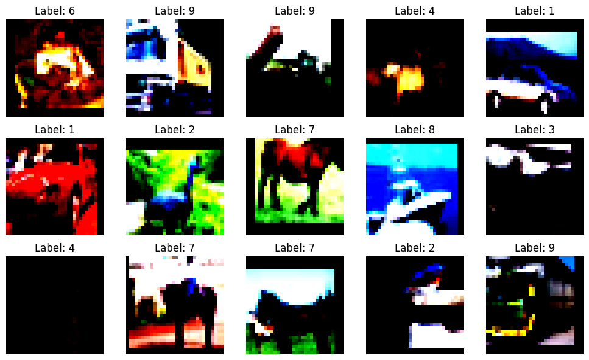
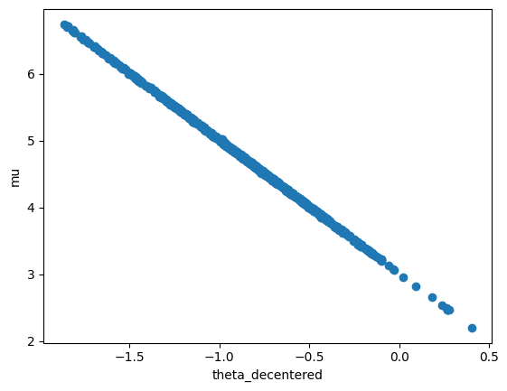
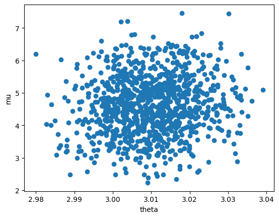
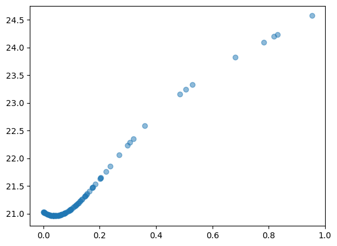
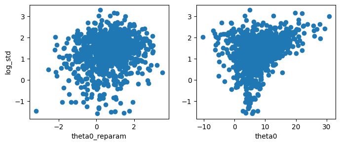
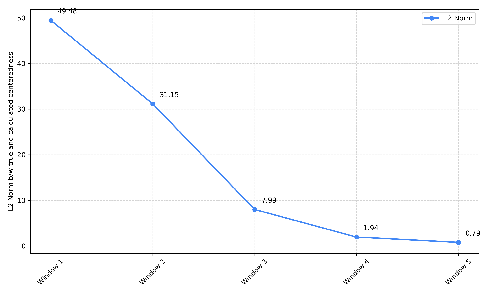
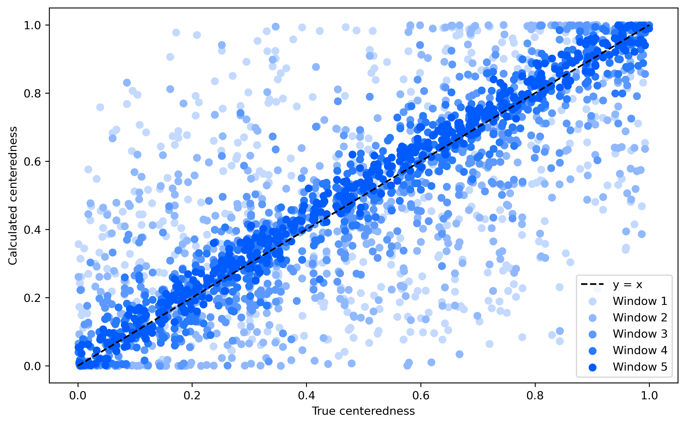
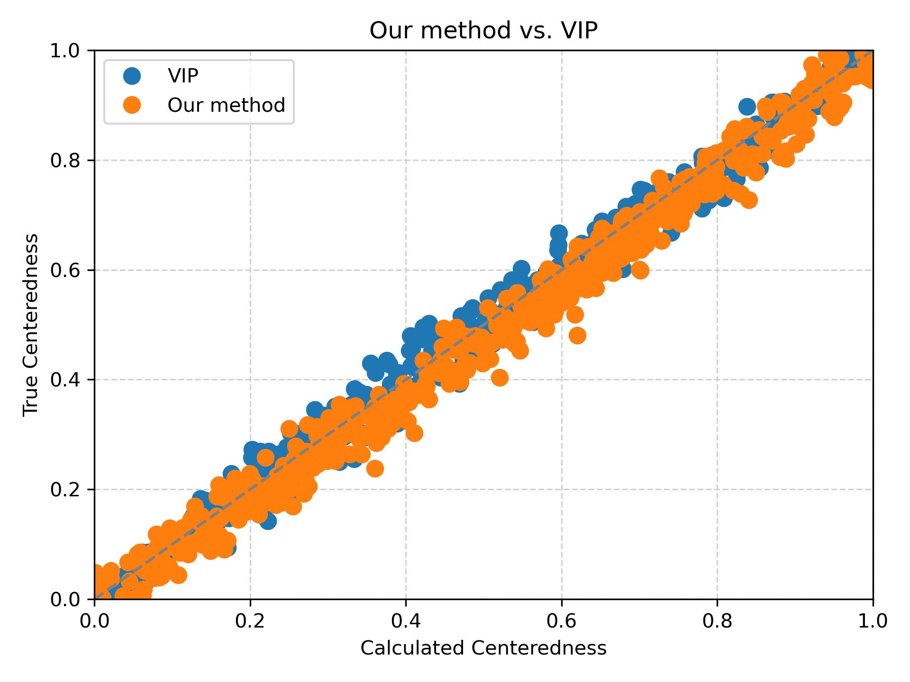
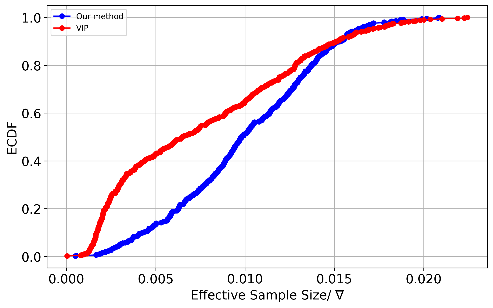
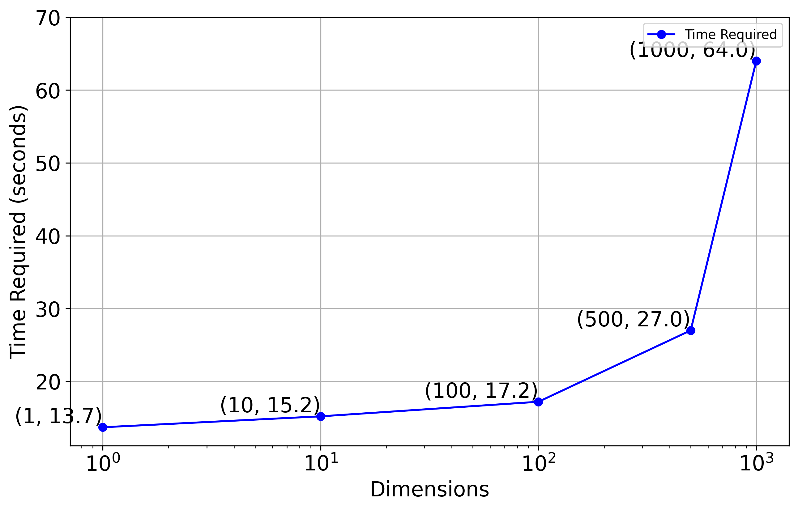

import torch
import random
import numpy as np
import torch.nn as nn
from tqdm import tqdm
import matplotlib.pyplot as plt
import torch.optim as optim
import torch.nn.functional as F
from torch.utils.data import DataLoader
import torch.optim.lr_scheduler as lr_scheduler
from torch.utils.data.sampler import SubsetRandomSampler
# Torchvison
import torchvision.transforms as T
from torchvision.datasets import CIFAR10Why Active Learning?
- Experimental result of semi-supervised learning suggests that higher portion of annotated data ensures better performance.
- But, annotation is expensive and time-consuming. Thus, limiting the budget.
- Thus, Active learning is a solution to this problem as it selects data points that are most informative and asks for annotation of these data points only.
What is Active Learning?
- Model actively selects data points that the model is uncertain about. Using the selected data points, the model is retrained.
- Eg: In a classification task, the model selects data points that are close to the decision boundary. Later, the model is retrained using the selected data points.
- Lets’ demonstrate this using CIFAR-10 example.
Model Architecture
class BasicBlock(nn.Module):
expansion = 1
def __init__(self, in_planes, planes, stride=1):
super(BasicBlock, self).__init__()
self.conv1 = nn.Conv2d(in_planes, planes, kernel_size=3, stride=stride, padding=1, bias=False)
self.bn1 = nn.BatchNorm2d(planes)
self.conv2 = nn.Conv2d(planes, planes, kernel_size=3, stride=1, padding=1, bias=False)
self.bn2 = nn.BatchNorm2d(planes)
self.shortcut = nn.Sequential()
if stride != 1 or in_planes != self.expansion*planes:
self.shortcut = nn.Sequential(
nn.Conv2d(in_planes, self.expansion*planes, kernel_size=1, stride=stride, bias=False),
nn.BatchNorm2d(self.expansion*planes)
)
def forward(self, x):
out = F.relu(self.bn1(self.conv1(x)))
out = self.bn2(self.conv2(out))
out += self.shortcut(x)
out = F.relu(out)
return outclass ResNet(nn.Module):
def __init__(self, block, num_blocks, num_classes=10):
super(ResNet, self).__init__()
self.in_planes = 64
self.conv1 = nn.Conv2d(3, 64, kernel_size=3, stride=1, padding=1, bias=False)
self.bn1 = nn.BatchNorm2d(64)
self.layer1 = self._make_layer(block, 64, num_blocks[0], stride=1)
self.layer2 = self._make_layer(block, 128, num_blocks[1], stride=2)
self.layer3 = self._make_layer(block, 256, num_blocks[2], stride=2)
self.layer4 = self._make_layer(block, 512, num_blocks[3], stride=2)
self.linear = nn.Linear(512*block.expansion, num_classes)
def _make_layer(self, block, planes, num_blocks, stride):
strides = [stride] + [1]*(num_blocks-1)
layers = []
for stride in strides:
layers.append(block(self.in_planes, planes, stride))
self.in_planes = planes * block.expansion
return nn.Sequential(*layers)
def forward(self, x):
out = F.relu(self.bn1(self.conv1(x)))
out1 = self.layer1(out)
out2 = self.layer2(out1)
out3 = self.layer3(out2)
out4 = self.layer4(out3)
out = F.avg_pool2d(out4, 4)
out = out.view(out.size(0), -1)
out = self.linear(out)
return out, [out1, out2, out3, out4]def ResNet18(num_classes = 10):
return ResNet(BasicBlock, [2,2,2,2], num_classes)Data Transformation (CIFAR-10)
train_transform = T.Compose([
T.RandomHorizontalFlip(),
T.RandomCrop(size=32, padding=4),
T.ToTensor(),
T.Normalize([0.4914, 0.4822, 0.4465], [0.2023, 0.1994, 0.2010]) # T.Normalize((0.5071, 0.4867, 0.4408), (0.2675, 0.2565, 0.2761)) # CIFAR-100
])
test_transform = T.Compose([
T.ToTensor(),
T.Normalize([0.4914, 0.4822, 0.4465], [0.2023, 0.1994, 0.2010]) # T.Normalize((0.5071, 0.4867, 0.4408), (0.2675, 0.2565, 0.2761)) # CIFAR-100
])cifar10_train = CIFAR10('../cifar10', train=True, download=True, transform=train_transform)
cifar10_unlabeled = CIFAR10('../cifar10', train=True, download=True, transform=test_transform)
cifar10_test = CIFAR10('../cifar10', train=False, download=True, transform=test_transform)Files already downloaded and verified
Files already downloaded and verified
Files already downloaded and verifiedclass SubsetSequentialSampler(torch.utils.data.Sampler):
def __init__(self, indices):
self.indices = indices
def __iter__(self):
return (self.indices[i] for i in range(len(self.indices)))
def __len__(self):
return len(self.indices)Visualising the dataset
# plot some sample images from the dataset
fig, axes = plt.subplots(nrows=3, ncols=5, figsize=(10, 6))
for i, ax in enumerate(axes.flat):
img, label = cifar10_train[i]
img = np.clip(img.permute(1, 2, 0), 0, 1) # clip the input image for the valid range for imshow
ax.imshow(img)
ax.set_title(f"Label: {label}")
ax.axis('off')
plt.tight_layout()
plt.show()
# cifar_10_labels = {0: 'airplane', 1: 'automobile', 2: 'bird', 3: 'cat', 4: 'deer',
# 5: 'dog', 6: 'frog', 7: 'horse', 8: 'ship', 9: 'truck'}
def train(model, criterion, optimizer, dataloaders, num_epochs, scheduler):
model.train()
train_loss = []
test_loss = []
for epoch in range(num_epochs):
scheduler.step()
for data in tqdm(dataloaders['train'], leave=False, total=len(dataloaders['train'])):
inputs = data[0].cuda()
labels = data[1].cuda()
optimizer.zero_grad()
scores, features = model(inputs)
target_loss = criterion(scores, labels)
loss = torch.sum(target_loss) / target_loss.size(0)
train_loss.append(loss.item())
loss.backward()
optimizer.step()
# Evaluating test loss
model.eval()
for data in dataloaders['test']:
inputs = data[0].cuda()
labels = data[1].cuda()
scores, features = model(inputs)
target_loss = criterion(scores, labels)
loss = torch.sum(target_loss) / target_loss.size(0)
test_loss.append(loss.item())
return train_loss, test_lossdef entropy(model, unlabeled_loader):
model.eval()
entropies = []
with torch.no_grad():
for data in unlabeled_loader:
inputs = data[0].cuda()
scores, _ = model(inputs)
entropy = -torch.sum(F.softmax(scores, dim=1) * F.log_softmax(scores, dim=1), dim=1)
entropies.append(entropy.cpu().numpy())
return np.concatenate(entropies)
# unlabeled_loader = DataLoader(cifar10_unlabeled, batch_size=128, shuffle=False, num_workers=4, pin_memory=True)## CONFIG
NUM_TRAIN = 50000
BATCH = 128
ADDENDUM = 1000
SUBSET = 10000
MOMENTUM = 0.9
WDECAY = 5e-4
LR = 0.1
CYCLES = 1
MILESTONES = [160]
EPOCH = 120indices = list(range(NUM_TRAIN))
random.shuffle(indices)
labeled_set = indices[:ADDENDUM]
unlabeled_set = indices[ADDENDUM:]
train_loader = DataLoader(cifar10_train, batch_size=BATCH, sampler=SubsetRandomSampler(labeled_set), pin_memory=True)
test_loader = DataLoader(cifar10_test, batch_size=BATCH)
dataloaders = {'train': train_loader, 'test': test_loader}
# Model
resnet18 = ResNet18(num_classes=10).cuda()
torch.backends.cudnn.benchmark = False
# Active learning cycles
for cycle in range(CYCLES):
# Loss, criterion and scheduler (re)initialization
criterion = nn.CrossEntropyLoss(reduction='none')
optimizer = optim.SGD(resnet18.parameters(), lr=LR,
momentum=MOMENTUM, weight_decay=WDECAY)
scheduler = lr_scheduler.MultiStepLR(optimizer, milestones=MILESTONES)
# Training and test
train_loss, acc = train(resnet18, criterion, optimizer, dataloaders, EPOCH, scheduler)
# acc = test(resnet18, dataloaders, mode='test')
print('Cycle {}/{} || Label set size {}: Test acc {}'.format(cycle+1, CYCLES, len(labeled_set), acc))
random.shuffle(unlabeled_set)
subset = unlabeled_set[:SUBSET]
# Create unlabeled dataloader for the unlabeled subset
unlabeled_loader = DataLoader(cifar10_unlabeled, batch_size=BATCH, sampler=SubsetSequentialSampler(subset), pin_memory=True)
# Measure uncertainty of each data points in the subset
uncertainty = entropy(resnet18, unlabeled_loader)
# Index in ascending order
arg = np.argsort(uncertainty)
# Update the labeled dataset and the unlabeled dataset, respectively
labeled_set += list(torch.tensor(subset)[arg][-ADDENDUM:].numpy())
unlabeled_set = list(torch.tensor(subset)[arg][:-ADDENDUM].numpy()) + unlabeled_set[SUBSET:]
# Create a new dataloader for the updated labeled dataset
dataloaders['train'] = DataLoader(cifar10_train, batch_size=BATCH,
sampler=SubsetRandomSampler(labeled_set),
pin_memory=True)Stop Here
# Loss Prediction Loss
def LossPredLoss(input, target, margin=1.0, reduction='mean'):
assert len(input) % 2 == 0, 'the batch size is not even.'
assert input.shape == input.flip(0).shape
input = (input - input.flip(0))[:len(input)//2] # [l_1 - l_2B, l_2 - l_2B-1, ... , l_B - l_B+1], where batch_size = 2B
target = (target - target.flip(0))[:len(target)//2]
target = target.detach()
one = 2 * torch.sign(torch.clamp(target, min=0)) - 1 # 1 operation which is defined by the authors
if reduction == 'mean':
loss = torch.sum(torch.clamp(margin - one * input, min=0))
loss = loss / input.size(0) # Note that the size of input is already halved
elif reduction == 'none':
loss = torch.clamp(margin - one * input, min=0)
else:
NotImplementedError()
return lossdef train_epoch(models, criterion, optimizers, dataloaders, epoch, epoch_loss, vis=None, plot_data=None):
models['backbone'].train()
models['module'].train()
for data in tqdm(dataloaders['train'], leave=False, total=len(dataloaders['train'])):
inputs = data[0].cuda()
labels = data[1].cuda()
optimizers['backbone'].zero_grad()
optimizers['module'].zero_grad()
scores, features = models['backbone'](inputs)
target_loss = criterion(scores, labels)
if epoch > epoch_loss:
# After 120 epochs, stop the gradient from the loss prediction module propagated to the target model.
features[0] = features[0].detach()
features[1] = features[1].detach()
features[2] = features[2].detach()
features[3] = features[3].detach()
pred_loss = models['module'](features)
pred_loss = pred_loss.view(pred_loss.size(0))
m_backbone_loss = torch.sum(target_loss) / target_loss.size(0)
m_module_loss = LossPredLoss(pred_loss, target_loss, margin=MARGIN)
loss = m_backbone_loss + WEIGHT * m_module_loss
loss.backward()
optimizers['backbone'].step()
optimizers['module'].step()def test(models, dataloaders, mode='val'):
assert mode == 'val' or mode == 'test'
models['backbone'].eval()
models['module'].eval()
total = 0
correct = 0
with torch.no_grad():
for (inputs, labels) in dataloaders[mode]:
inputs = inputs.cuda()
labels = labels.cuda()
scores, _ = models['backbone'](inputs)
_, preds = torch.max(scores.data, 1)
total += labels.size(0)
correct += (preds == labels).sum().item()
return 100 * correct / totaldef train(models, criterion, optimizers, schedulers, dataloaders, num_epochs, epoch_loss, vis, plot_data):
print('>> Train a Model.')
best_acc = 0.
checkpoint_dir = os.path.join('./cifar10', 'train', 'weights')
if not os.path.exists(checkpoint_dir):
os.makedirs(checkpoint_dir)
for epoch in range(num_epochs):
schedulers['backbone'].step()
schedulers['module'].step()
train_epoch(models, criterion, optimizers, dataloaders, epoch, epoch_loss, vis, plot_data)
# Save a checkpoint
if False and epoch % 5 == 4:
acc = test(models, dataloaders, 'test')
if best_acc < acc:
best_acc = acc
torch.save({
'epoch': epoch + 1,
'state_dict_backbone': models['backbone'].state_dict(),
'state_dict_module': models['module'].state_dict()
},
'%s/active_resnet18_cifar10.pth' % (checkpoint_dir))
print('Val Acc: {:.3f} \t Best Acc: {:.3f}'.format(acc, best_acc))
print('>> Finished.')def get_uncertainty(models, unlabeled_loader):
models['backbone'].eval()
models['module'].eval()
uncertainty = torch.tensor([]).cuda()
with torch.no_grad():
for (inputs, labels) in unlabeled_loader:
inputs = inputs.cuda()
# labels = labels.cuda()
scores, features = models['backbone'](inputs)
pred_loss = models['module'](features) # pred_loss = criterion(scores, labels) # ground truth loss
pred_loss = pred_loss.view(pred_loss.size(0))
uncertainty = torch.cat((uncertainty, pred_loss), 0)
return uncertainty.cpu()if __name__ == '__main__':
vis = visdom.Visdom(server='http://localhost', port=9000)
plot_data = {'X': [], 'Y': [], 'legend': ['Backbone Loss', 'Module Loss', 'Total Loss']}
for trial in range(TRIALS):
# Initialize a labeled dataset by randomly sampling K=ADDENDUM=1,000 data points from the entire dataset.
indices = list(range(NUM_TRAIN))
random.shuffle(indices)
labeled_set = indices[:ADDENDUM]
unlabeled_set = indices[ADDENDUM:]
train_loader = DataLoader(cifar10_train, batch_size=BATCH,
sampler=SubsetRandomSampler(labeled_set),
pin_memory=True)
test_loader = DataLoader(cifar10_test, batch_size=BATCH)
dataloaders = {'train': train_loader, 'test': test_loader}
# Model
resnet18 = resnet.ResNet18(num_classes=10).cuda()
loss_module = lossnet.LossNet().cuda()
models = {'backbone': resnet18, 'module': loss_module}
torch.backends.cudnn.benchmark = False
# Active learning cycles
for cycle in range(CYCLES):
# Loss, criterion and scheduler (re)initialization
criterion = nn.CrossEntropyLoss(reduction='none')
optim_backbone = optim.SGD(models['backbone'].parameters(), lr=LR,
momentum=MOMENTUM, weight_decay=WDECAY)
optim_module = optim.SGD(models['module'].parameters(), lr=LR,
momentum=MOMENTUM, weight_decay=WDECAY)
sched_backbone = lr_scheduler.MultiStepLR(optim_backbone, milestones=MILESTONES)
sched_module = lr_scheduler.MultiStepLR(optim_module, milestones=MILESTONES)
optimizers = {'backbone': optim_backbone, 'module': optim_module}
schedulers = {'backbone': sched_backbone, 'module': sched_module}
# Training and test
train(models, criterion, optimizers, schedulers, dataloaders, EPOCH, EPOCHL, vis, plot_data)
acc = test(models, dataloaders, mode='test')
print('Trial {}/{} || Cycle {}/{} || Label set size {}: Test acc {}'.format(trial+1, TRIALS, cycle+1, CYCLES, len(labeled_set), acc))
##
# Update the labeled dataset via loss prediction-based uncertainty measurement
# Randomly sample 10000 unlabeled data points
random.shuffle(unlabeled_set)
subset = unlabeled_set[:SUBSET]
# Create unlabeled dataloader for the unlabeled subset
unlabeled_loader = DataLoader(cifar10_unlabeled, batch_size=BATCH,
sampler=SubsetSequentialSampler(subset), # more convenient if we maintain the order of subset
pin_memory=True)
# Measure uncertainty of each data points in the subset
uncertainty = get_uncertainty(models, unlabeled_loader)
# Index in ascending order
arg = np.argsort(uncertainty)
# Update the labeled dataset and the unlabeled dataset, respectively
labeled_set += list(torch.tensor(subset)[arg][-ADDENDUM:].numpy())
unlabeled_set = list(torch.tensor(subset)[arg][:-ADDENDUM].numpy()) + unlabeled_set[SUBSET:]
# Create a new dataloader for the updated labeled dataset
dataloaders['train'] = DataLoader(cifar10_train, batch_size=BATCH,
sampler=SubsetRandomSampler(labeled_set),
pin_memory=True)
# Save a checkpoint
torch.save({
'trial': trial + 1,
'state_dict_backbone': models['backbone'].state_dict(),
'state_dict_module': models['module'].state_dict()
},
'./cifar10/train/weights/active_resnet18_cifar10_trial{}.pth'.format(trial))Change below this:
## Slide not to be shown (imports)
import jax
import optuna
import numpyro
import jax.numpy as jnp
from numpyro.infer import MCMC, NUTS
import numpyro.distributions as dist
import matplotlib.pyplot as plt
from jax.scipy.optimize import minimize
rng_key = jax.random.PRNGKey(0)
from numpyro.infer.reparam import LocScaleReparam
from numpyro.handlers import reparam## Slide not to be shown (Some functions)
def inference(model):
nuts_kernel = NUTS(model)
mcmc = MCMC(nuts_kernel, num_warmup=500, num_samples=1000)
mcmc.run(rng_key, extra_fields=('potential_energy',))
return mcmc.get_samples()
def scatterplt(samples):
try:
plt.scatter(samples['theta_decentered'], samples['mu'])
plt.xlabel('theta_decentered')
except:
plt.scatter(samples['theta'], samples['mu'])
plt.xlabel('theta')
plt.ylabel('mu')
plt.show()- Lets’ see an example to find out why!
samples_normal = jax.random.normal(rng_key, shape=(10000,)) + 3 ## samples from a standard normal
def model():
mu = numpyro.sample('mu', dist.Normal(5, 1)) ## mu ~ N(5,1)
theta = numpyro.sample('theta', dist.Normal(mu, 2)) ## theta ~ N(mu,2)
numpyro.sample('obs', dist.Normal(theta, 1), obs=samples_normal) ## P(y|theta) ~ N(theta,1)ncp_model = reparam(model, config={'theta': LocScaleReparam(0)})
samples_ncp = inference(ncp_model)
scatterplt(samples_ncp)sample: 100%|██████████| 1500/1500 [00:05<00:00, 285.49it/s, 427 steps of size 1.29e-02. acc. prob=0.91]
ncp_model = reparam(model, config={'theta': LocScaleReparam(1)})
samples_ncp = inference(ncp_model)
scatterplt(samples_ncp)sample: 100%|██████████| 1500/1500 [00:01<00:00, 918.19it/s, 7 steps of size 7.40e-01. acc. prob=0.93] 
- From the above experiment it is evident that the we don’t get the best results in non-centered parameterisation rather the best centeredness varies from model to model based on parameters.
Centeredness vs Non-centeredness
- The best parameterization for a given model may lie somewhere between centered and non centered representation.
- Existing solutions:
- Variationally Inferred Parameterization[1]
- NeuTra-lizing Bad Geometry in HMC[2]
- Variationally Inferred Parameterization[1]
Problems with existing solutions
- Requires separate pre-processing steps apart from the regular warmup and sampling steps which increases the computation cost.
- Need to tune the hyperparameters for the existing solutions to get good results
Proposed Solution
- Finding the optimal centeredness during the succesive windows of warmup.
- Loss function for finding centeredness should be such that it takes the parameterized distribution as close as possible to Normal distribution.
Warmup Phase
Used for adaptation of inverse mass matrix (\(M^{-1}\)) and time step size (\(\Delta t\)).
Consist of three stages:

- Initial buffer (I): Time step adaptation (\(\Delta t\))
- Window buffer (II): Both Time step (\(\Delta t\)) & Inverse mass matrix adaptation (\(M^{-1}\))
- Term buffer (III): Final Time step adaptation (\(\Delta t\))
Modified Warmup Phase
- Used for adaptation of inverse mass matrix (\(M^{-1}\)), time step size (\(\Delta t\)) and centeredness (\(c\)).
- Initial buffer and Term buffer remains the same.
- Using the samples obtained after each window buffer, optimize the centeredness (\(c\)) so as to reduce the distance between the present reparameterized distribution and an independent normal distribution.
- For each succesive window, reparameterize the model based on the optimal centeredness obtained and repeat the step for finding optimal centeredness.
Loss Function
\(\Theta \in R^{SXN}\) \(\to\) matrix of draws
\(\Phi_{(c)}\) \(\to\) bijective family of reparameterisation (maps \(P\) to \(P_{c}\) and \(\Theta\) to \(\Theta_{c})\)
\(\log p_{c}\) = \(\log p\ (inv\ \Phi_{(c)})\) + \(\log |\nabla_{\theta} \Phi_{(c)}|\)
\(Q_{c}\) = \(N(mean(\Theta_{c}), diag var(\Theta_{c}))\)
\(\Phi_{(c^{*})} =\ argmin_{\Phi_{(c)}}KL(P_{(c)}||Q_{(c)})\)
Experimentation
- Initial experiments done on Eight School ’s model.
J = 8
y = jnp.array([28.0, 8.0, -3.0, 7.0, -1.0, 1.0, 18.0, 12.0])
sigma = jnp.array([15.0, 10.0, 16.0, 11.0, 9.0, 11.0, 10.0, 18.0])def eight_schools(J, sigma, y=None):
mu = numpyro.sample('mu', dist.Normal(2, 5)) # mu ~ N(2,5)
tau = numpyro.sample('tau', dist.HalfCauchy(5)) # tau ~ HalfCauchy(5)
with numpyro.plate('J', J):
theta = numpyro.sample('theta', dist.Normal(mu, tau)) # theta_i ~ N(mu,tau)
numpyro.sample('obs', dist.Normal(theta, sigma), obs=y) # P(y|theta_i) ~ N(theta_i, sigma)- On post warmup samples
# Sampling
nuts_kernel = NUTS(eight_schools)
warmup = MCMC(nuts_kernel, num_warmup=1000, num_samples=0) # Collecting all warmup samples
warmup.warmup(rng_key, J, sigma, y=y, collect_warmup=True)
samples = warmup.get_samples()warmup: 100%|██████████| 1000/1000 [00:01<00:00, 650.18it/s, 31 steps of size 1.67e-01. acc. prob=0.79]- Using the following continuous reparameterization family (from Variationally Inferred Parameterization (VIP)) :
- For each \(z_{i}\) ~ \(N(z_{i}|\mu_{i}, \sigma_{i})\)
- Define \(z'_{i}\) ~ $N({i} {i}, ^{_{i}}) $
- Now, \(z_{i}\) = \(\mu_{i} + \sigma_{i}^{1-\lambda_{i}}(z'_{i}-\lambda_{i}\mu_{i})\)
# For reparameterizing the samples and for creating the mulivariate normal distribution
def reparameterize_samples_dist(samples, c):
param_samples = samples['theta'].T
param_mean = samples['mu']
param_std = samples['tau']
new_param_samples = param_mean * c + (param_samples - param_mean) * param_std ** (c - 1)
theta_mu = jnp.mean(new_param_samples, axis=1)
theta_std = jnp.std(new_param_samples, axis=1)
mvn = dist.MultivariateNormal(loc=theta_mu, covariance_matrix=jnp.diag(theta_std**2))
return new_param_samples, mvn, theta_mu, theta_std# For Computing the jacobian matrix for transformation
def log_jacobian(samples, c):
sigma = samples['tau']
logJ = jnp.sum(jnp.log(sigma) * (1 - c) * samples['theta'].shape[1])
logJ /= len(sigma)
return logJ# Function for computing KL divergence
def kl_value(centeredness):
centeredness = centeredness[0]
reparam_sample, mvn, mu_theta, std_theta = reparameterize_samples_dist(samples, centeredness)
jacobian_log = log_jacobian(samples, centeredness)
kl = -mvn.log_prob(reparam_sample.T).mean() + jacobian_log
return klOptimization
- Jax based BFGS Optimization
# jax based BFGS optimization
c_initial = jnp.array([0.1])
res = minimize(kl_value, c_initial, method='BFGS')
best_c_jax = res.x[0]
print(best_c_jax)0.039444983- Optuna based optimization
def kl_value_optuna(centeredness):
reparam_sample, mvn, mu_theta, std_theta = reparameterize_samples_dist(samples, centeredness)
jacobian_log = log_jacobian(samples, centeredness)
kl = -mvn.log_prob(reparam_sample.T).mean() + jacobian_log
return kl# Defining the function that needs to be minimized
def objective(trial):
x = trial.suggest_float('x', 0, 1)
loss = kl_value_optuna(x)
return lossstudy = optuna.create_study(direction='minimize')
study.optimize(objective, n_trials=100)
best_trial = study.best_trial
best_c_optuna = best_trial.params['x'][I 2023-07-21 12:30:17,152] A new study created in memory with name: no-name-ce6ea8e4-5557-4576-b6d3-9b66b3f4e014
[I 2023-07-21 12:30:17,522] Trial 0 finished with value: 21.478862762451172 and parameters: {'x': 0.17584669682579634}. Best is trial 0 with value: 21.478862762451172.
[I 2023-07-21 12:30:17,528] Trial 1 finished with value: 24.09613037109375 and parameters: {'x': 0.7817069280810928}. Best is trial 0 with value: 21.478862762451172.
[I 2023-07-21 12:30:17,533] Trial 2 finished with value: 22.280963897705078 and parameters: {'x': 0.30662176874135927}. Best is trial 0 with value: 21.478862762451172.
[I 2023-07-21 12:30:17,544] Trial 3 finished with value: 24.22972297668457 and parameters: {'x': 0.8316834716343527}. Best is trial 0 with value: 21.478862762451172.
[I 2023-07-21 12:30:17,549] Trial 4 finished with value: 24.571487426757812 and parameters: {'x': 0.9536417862630372}. Best is trial 0 with value: 21.478862762451172.
[I 2023-07-21 12:30:17,558] Trial 5 finished with value: 23.32807159423828 and parameters: {'x': 0.5278171991648825}. Best is trial 0 with value: 21.478862762451172.
[I 2023-07-21 12:30:17,565] Trial 6 finished with value: 23.81903839111328 and parameters: {'x': 0.6804841397939312}. Best is trial 0 with value: 21.478862762451172.
[I 2023-07-21 12:30:17,573] Trial 7 finished with value: 23.242023468017578 and parameters: {'x': 0.5051001539715525}. Best is trial 0 with value: 21.478862762451172.
[I 2023-07-21 12:30:17,578] Trial 8 finished with value: 23.161338806152344 and parameters: {'x': 0.4847693487670296}. Best is trial 0 with value: 21.478862762451172.
[I 2023-07-21 12:30:17,584] Trial 9 finished with value: 24.19658851623535 and parameters: {'x': 0.8193228786412999}. Best is trial 0 with value: 21.478862762451172.
[I 2023-07-21 12:30:17,598] Trial 10 finished with value: 20.99654197692871 and parameters: {'x': 0.01012783576019044}. Best is trial 10 with value: 20.99654197692871.
[I 2023-07-21 12:30:17,609] Trial 11 finished with value: 20.97226333618164 and parameters: {'x': 0.021482897698871527}. Best is trial 11 with value: 20.97226333618164.
[I 2023-07-21 12:30:17,621] Trial 12 finished with value: 21.007823944091797 and parameters: {'x': 0.006225750391182828}. Best is trial 11 with value: 20.97226333618164.
[I 2023-07-21 12:30:17,633] Trial 13 finished with value: 20.98029899597168 and parameters: {'x': 0.017028345744416362}. Best is trial 11 with value: 20.97226333618164.
[I 2023-07-21 12:30:17,643] Trial 14 finished with value: 21.32019805908203 and parameters: {'x': 0.14837261040270638}. Best is trial 11 with value: 20.97226333618164.
[I 2023-07-21 12:30:17,656] Trial 15 finished with value: 21.357559204101562 and parameters: {'x': 0.15505667225509345}. Best is trial 11 with value: 20.97226333618164.
[I 2023-07-21 12:30:17,664] Trial 16 finished with value: 22.35342788696289 and parameters: {'x': 0.3191617380266179}. Best is trial 11 with value: 20.97226333618164.
[I 2023-07-21 12:30:17,676] Trial 17 finished with value: 20.983047485351562 and parameters: {'x': 0.01570799167586904}. Best is trial 11 with value: 20.97226333618164.
[I 2023-07-21 12:30:17,690] Trial 18 finished with value: 22.05672264099121 and parameters: {'x': 0.2691589238654932}. Best is trial 11 with value: 20.97226333618164.
[I 2023-07-21 12:30:17,699] Trial 19 finished with value: 21.073299407958984 and parameters: {'x': 0.09619890391216168}. Best is trial 11 with value: 20.97226333618164.
[I 2023-07-21 12:30:17,709] Trial 20 finished with value: 21.652862548828125 and parameters: {'x': 0.20427583423078496}. Best is trial 11 with value: 20.97226333618164.
[I 2023-07-21 12:30:17,720] Trial 21 finished with value: 20.96302032470703 and parameters: {'x': 0.050305196738679905}. Best is trial 21 with value: 20.96302032470703.
[I 2023-07-21 12:30:17,735] Trial 22 finished with value: 21.06765365600586 and parameters: {'x': 0.09466542797673394}. Best is trial 21 with value: 20.96302032470703.
[I 2023-07-21 12:30:17,762] Trial 23 finished with value: 21.016345977783203 and parameters: {'x': 0.07878693559027633}. Best is trial 21 with value: 20.96302032470703.
[I 2023-07-21 12:30:17,773] Trial 24 finished with value: 21.854490280151367 and parameters: {'x': 0.23652560404399758}. Best is trial 21 with value: 20.96302032470703.
[I 2023-07-21 12:30:17,793] Trial 25 finished with value: 20.981300354003906 and parameters: {'x': 0.06372276076878293}. Best is trial 21 with value: 20.96302032470703.
[I 2023-07-21 12:30:17,812] Trial 26 finished with value: 21.158065795898438 and parameters: {'x': 0.1165211765395495}. Best is trial 21 with value: 20.96302032470703.
[I 2023-07-21 12:30:17,823] Trial 27 finished with value: 21.760175704956055 and parameters: {'x': 0.22146025668389857}. Best is trial 21 with value: 20.96302032470703.
[I 2023-07-21 12:30:17,839] Trial 28 finished with value: 20.983776092529297 and parameters: {'x': 0.015370600866575199}. Best is trial 21 with value: 20.96302032470703.
[I 2023-07-21 12:30:17,848] Trial 29 finished with value: 21.641178131103516 and parameters: {'x': 0.20239517028292664}. Best is trial 21 with value: 20.96302032470703.
[I 2023-07-21 12:30:17,861] Trial 30 finished with value: 21.31525421142578 and parameters: {'x': 0.1474752271207078}. Best is trial 21 with value: 20.96302032470703.
[I 2023-07-21 12:30:17,883] Trial 31 finished with value: 20.98286247253418 and parameters: {'x': 0.06455904892080892}. Best is trial 21 with value: 20.96302032470703.
[I 2023-07-21 12:30:17,898] Trial 32 finished with value: 20.981739044189453 and parameters: {'x': 0.0639595469926666}. Best is trial 21 with value: 20.96302032470703.
[I 2023-07-21 12:30:17,910] Trial 33 finished with value: 21.024593353271484 and parameters: {'x': 0.0012143679706077826}. Best is trial 21 with value: 20.96302032470703.
[I 2023-07-21 12:30:17,924] Trial 34 finished with value: 21.2662353515625 and parameters: {'x': 0.13837976610354358}. Best is trial 21 with value: 20.96302032470703.
[I 2023-07-21 12:30:17,940] Trial 35 finished with value: 20.981460571289062 and parameters: {'x': 0.0638092573044853}. Best is trial 21 with value: 20.96302032470703.
[I 2023-07-21 12:30:17,949] Trial 36 finished with value: 22.237255096435547 and parameters: {'x': 0.2991726535422863}. Best is trial 21 with value: 20.96302032470703.
[I 2023-07-21 12:30:17,968] Trial 37 finished with value: 21.532812118530273 and parameters: {'x': 0.184783432933084}. Best is trial 21 with value: 20.96302032470703.
[I 2023-07-21 12:30:17,978] Trial 38 finished with value: 20.97808074951172 and parameters: {'x': 0.06190912736734475}. Best is trial 21 with value: 20.96302032470703.
[I 2023-07-21 12:30:17,991] Trial 39 finished with value: 21.184711456298828 and parameters: {'x': 0.12220730824639862}. Best is trial 21 with value: 20.96302032470703.
[I 2023-07-21 12:30:18,006] Trial 40 finished with value: 22.582069396972656 and parameters: {'x': 0.3606091195943603}. Best is trial 21 with value: 20.96302032470703.
[I 2023-07-21 12:30:18,015] Trial 41 finished with value: 20.962871551513672 and parameters: {'x': 0.050133846093693396}. Best is trial 41 with value: 20.962871551513672.
[I 2023-07-21 12:30:18,030] Trial 42 finished with value: 20.960521697998047 and parameters: {'x': 0.04691414895707719}. Best is trial 42 with value: 20.960521697998047.
[I 2023-07-21 12:30:18,040] Trial 43 finished with value: 21.464412689208984 and parameters: {'x': 0.17342687997114256}. Best is trial 42 with value: 20.960521697998047.
[I 2023-07-21 12:30:18,048] Trial 44 finished with value: 21.101139068603516 and parameters: {'x': 0.10335950307395814}. Best is trial 42 with value: 20.960521697998047.
[I 2023-07-21 12:30:18,060] Trial 45 finished with value: 20.973033905029297 and parameters: {'x': 0.05876309223154809}. Best is trial 42 with value: 20.960521697998047.
[I 2023-07-21 12:30:18,073] Trial 46 finished with value: 20.958948135375977 and parameters: {'x': 0.043590468170786406}. Best is trial 46 with value: 20.958948135375977.
[I 2023-07-21 12:30:18,081] Trial 47 finished with value: 21.227359771728516 and parameters: {'x': 0.1308621815383041}. Best is trial 46 with value: 20.958948135375977.
[I 2023-07-21 12:30:18,095] Trial 48 finished with value: 20.95848846435547 and parameters: {'x': 0.037008621383143876}. Best is trial 48 with value: 20.95848846435547.
[I 2023-07-21 12:30:18,108] Trial 49 finished with value: 21.464881896972656 and parameters: {'x': 0.17350566862746925}. Best is trial 48 with value: 20.95848846435547.
[I 2023-07-21 12:30:18,124] Trial 50 finished with value: 20.9591064453125 and parameters: {'x': 0.04403677732959216}. Best is trial 48 with value: 20.95848846435547.
[I 2023-07-21 12:30:18,139] Trial 51 finished with value: 20.958484649658203 and parameters: {'x': 0.037033242388128024}. Best is trial 51 with value: 20.958484649658203.
[I 2023-07-21 12:30:18,150] Trial 52 finished with value: 21.0146484375 and parameters: {'x': 0.004091265726784574}. Best is trial 51 with value: 20.958484649658203.
[I 2023-07-21 12:30:18,166] Trial 53 finished with value: 21.19355010986328 and parameters: {'x': 0.12404204653819792}. Best is trial 51 with value: 20.958484649658203.
[I 2023-07-21 12:30:18,178] Trial 54 finished with value: 20.958499908447266 and parameters: {'x': 0.03695412586533163}. Best is trial 51 with value: 20.958484649658203.
[I 2023-07-21 12:30:18,192] Trial 55 finished with value: 21.081878662109375 and parameters: {'x': 0.09847162565512366}. Best is trial 51 with value: 20.958484649658203.
[I 2023-07-21 12:30:18,208] Trial 56 finished with value: 20.95962142944336 and parameters: {'x': 0.03372279503215306}. Best is trial 51 with value: 20.958484649658203.
[I 2023-07-21 12:30:18,217] Trial 57 finished with value: 21.075090408325195 and parameters: {'x': 0.09667862167771879}. Best is trial 51 with value: 20.958484649658203.
[I 2023-07-21 12:30:18,230] Trial 58 finished with value: 21.01943016052246 and parameters: {'x': 0.002676824165289346}. Best is trial 51 with value: 20.958484649658203.
[I 2023-07-21 12:30:18,243] Trial 59 finished with value: 21.409378051757812 and parameters: {'x': 0.16408245708056968}. Best is trial 51 with value: 20.958484649658203.
[I 2023-07-21 12:30:18,257] Trial 60 finished with value: 20.958477020263672 and parameters: {'x': 0.04184774669269055}. Best is trial 60 with value: 20.958477020263672.
[I 2023-07-21 12:30:18,273] Trial 61 finished with value: 20.958759307861328 and parameters: {'x': 0.04299274311023122}. Best is trial 60 with value: 20.958477020263672.
[I 2023-07-21 12:30:18,286] Trial 62 finished with value: 20.963279724121094 and parameters: {'x': 0.028588220146174667}. Best is trial 60 with value: 20.958477020263672.
[I 2023-07-21 12:30:18,308] Trial 63 finished with value: 21.21792984008789 and parameters: {'x': 0.12898901933473095}. Best is trial 60 with value: 20.958477020263672.
[I 2023-07-21 12:30:18,322] Trial 64 finished with value: 21.052663803100586 and parameters: {'x': 0.09043107808448948}. Best is trial 60 with value: 20.958477020263672.
[I 2023-07-21 12:30:18,339] Trial 65 finished with value: 20.961326599121094 and parameters: {'x': 0.030925393866438965}. Best is trial 60 with value: 20.958477020263672.
[I 2023-07-21 12:30:18,349] Trial 66 finished with value: 21.047931671142578 and parameters: {'x': 0.08903778837552029}. Best is trial 60 with value: 20.958477020263672.
[I 2023-07-21 12:30:18,366] Trial 67 finished with value: 20.959081649780273 and parameters: {'x': 0.03496986332824197}. Best is trial 60 with value: 20.958477020263672.
[I 2023-07-21 12:30:18,382] Trial 68 finished with value: 21.02678680419922 and parameters: {'x': 0.08239338012971459}. Best is trial 60 with value: 20.958477020263672.
[I 2023-07-21 12:30:18,393] Trial 69 finished with value: 20.958797454833984 and parameters: {'x': 0.03579992403933894}. Best is trial 60 with value: 20.958477020263672.
[I 2023-07-21 12:30:18,405] Trial 70 finished with value: 21.020240783691406 and parameters: {'x': 0.0024429664456278935}. Best is trial 60 with value: 20.958477020263672.
[I 2023-07-21 12:30:18,423] Trial 71 finished with value: 20.958251953125 and parameters: {'x': 0.03889943726397521}. Best is trial 71 with value: 20.958251953125.
[I 2023-07-21 12:30:18,433] Trial 72 finished with value: 21.33806610107422 and parameters: {'x': 0.15159023058486498}. Best is trial 71 with value: 20.958251953125.
[I 2023-07-21 12:30:18,448] Trial 73 finished with value: 21.003616333007812 and parameters: {'x': 0.07397970858308872}. Best is trial 71 with value: 20.958251953125.
[I 2023-07-21 12:30:18,462] Trial 74 finished with value: 20.959957122802734 and parameters: {'x': 0.033072453153977874}. Best is trial 71 with value: 20.958251953125.
[I 2023-07-21 12:30:18,480] Trial 75 finished with value: 21.172382354736328 and parameters: {'x': 0.1196073051785179}. Best is trial 71 with value: 20.958251953125.
[I 2023-07-21 12:30:18,492] Trial 76 finished with value: 21.009960174560547 and parameters: {'x': 0.07644060332194952}. Best is trial 71 with value: 20.958251953125.
[I 2023-07-21 12:30:18,500] Trial 77 finished with value: 21.13602066040039 and parameters: {'x': 0.11161294201348658}. Best is trial 71 with value: 20.958251953125.
[I 2023-07-21 12:30:18,512] Trial 78 finished with value: 20.95917510986328 and parameters: {'x': 0.034730924034632855}. Best is trial 71 with value: 20.958251953125.
[I 2023-07-21 12:30:18,524] Trial 79 finished with value: 21.633689880371094 and parameters: {'x': 0.20118860863334553}. Best is trial 71 with value: 20.958251953125.
[I 2023-07-21 12:30:18,535] Trial 80 finished with value: 21.027835845947266 and parameters: {'x': 0.000326094284544165}. Best is trial 71 with value: 20.958251953125.
[I 2023-07-21 12:30:18,545] Trial 81 finished with value: 20.958572387695312 and parameters: {'x': 0.03662093145763981}. Best is trial 71 with value: 20.958251953125.
[I 2023-07-21 12:30:18,559] Trial 82 finished with value: 20.968891143798828 and parameters: {'x': 0.05577215986849743}. Best is trial 71 with value: 20.958251953125.
[I 2023-07-21 12:30:18,574] Trial 83 finished with value: 20.997417449951172 and parameters: {'x': 0.07142156091329199}. Best is trial 71 with value: 20.958251953125.
[I 2023-07-21 12:30:18,582] Trial 84 finished with value: 20.967121124267578 and parameters: {'x': 0.025091432153655814}. Best is trial 71 with value: 20.958251953125.
[I 2023-07-21 12:30:18,596] Trial 85 finished with value: 21.060935974121094 and parameters: {'x': 0.09279958012809214}. Best is trial 71 with value: 20.958251953125.
[I 2023-07-21 12:30:18,611] Trial 86 finished with value: 21.30889892578125 and parameters: {'x': 0.14631639736301744}. Best is trial 71 with value: 20.958251953125.
[I 2023-07-21 12:30:18,625] Trial 87 finished with value: 20.963882446289062 and parameters: {'x': 0.027963839404734812}. Best is trial 71 with value: 20.958251953125.
[I 2023-07-21 12:30:18,691] Trial 88 finished with value: 20.964874267578125 and parameters: {'x': 0.05227439563750636}. Best is trial 71 with value: 20.958251953125.
[I 2023-07-21 12:30:18,714] Trial 89 finished with value: 21.124919891357422 and parameters: {'x': 0.10905847650264305}. Best is trial 71 with value: 20.958251953125.
[I 2023-07-21 12:30:18,728] Trial 90 finished with value: 20.96737289428711 and parameters: {'x': 0.05453974509843049}. Best is trial 71 with value: 20.958251953125.
[I 2023-07-21 12:30:18,742] Trial 91 finished with value: 20.96955680847168 and parameters: {'x': 0.023275832726661432}. Best is trial 71 with value: 20.958251953125.
[I 2023-07-21 12:30:18,797] Trial 92 finished with value: 21.005821228027344 and parameters: {'x': 0.07485153652705367}. Best is trial 71 with value: 20.958251953125.
[I 2023-07-21 12:30:18,829] Trial 93 finished with value: 20.958648681640625 and parameters: {'x': 0.04258364384159399}. Best is trial 71 with value: 20.958251953125.
[I 2023-07-21 12:30:18,843] Trial 94 finished with value: 21.148571014404297 and parameters: {'x': 0.11443265557035082}. Best is trial 71 with value: 20.958251953125.
[I 2023-07-21 12:30:18,853] Trial 95 finished with value: 20.959461212158203 and parameters: {'x': 0.04489944712956695}. Best is trial 71 with value: 20.958251953125.
[I 2023-07-21 12:30:18,864] Trial 96 finished with value: 21.022884368896484 and parameters: {'x': 0.001691175673073697}. Best is trial 71 with value: 20.958251953125.
[I 2023-07-21 12:30:18,875] Trial 97 finished with value: 21.254417419433594 and parameters: {'x': 0.13612660260735093}. Best is trial 71 with value: 20.958251953125.
[I 2023-07-21 12:30:18,892] Trial 98 finished with value: 21.00398063659668 and parameters: {'x': 0.07412590881408465}. Best is trial 71 with value: 20.958251953125.
[I 2023-07-21 12:30:18,905] Trial 99 finished with value: 20.972087860107422 and parameters: {'x': 0.02159164323540737}. Best is trial 71 with value: 20.958251953125.df_study = study.trials_dataframe()
plt.plot(df_study['params_x'], df_study['value'], 'o', alpha=0.5)
plt.xlabel("Centeredness", fontsize = 12)
plt.ylabel("Loss", fontsize = 12)
plt.show()
- Evident from above that Optuna keeps decreasing the search space after each iteration to get close to the best centeredness value.
# Function for creating the scatter plot
def scatterplt_2(samples, c):
fig, axes = plt.subplots(1, 2, figsize=(8, 3))
axes = axes.flatten()
reparam_sample, mvn, mu_theta, std_theta = reparameterize_samples_dist(samples, c)
reparam_sample = reparam_sample if reparam else samples['theta'].T
axes[0].scatter(reparam_sample[0],jnp.log(samples['tau']))
axes[0].set_xlabel('theta0_reparam')
axes[0].set_ylabel('log_std')
axes[1].scatter(samples['theta'].T[0],jnp.log(samples['tau']))
axes[1].set_xlabel('theta0')- Results obtained from initial experiments
scatterplt_2(samples, c = best_c_jax) ## Using the best centeredness computed
Implementation
- Modified BlackJax sampler code to incorporate the proposed algorithm.
- Inference time up from 2 seconds to 20 seconds.
- To evaluate the results used a model whose true centeredness already known:
- \(\mu\) ~ \(N(0,1)\)
- \(\log \sigma\) ~ \(N(0,1)\)
- \(x\) ~ \(N((1-c_{i}) \mu, \sigma^{(1-c_{i})})\)
Results



- Lets’ compare the sampling efficieny
- Our ESS/ \(\nabla\) results better then the ones produced by existing methods.

Scalability

Future Work
- Implementing a stochastic gradient based approach for finding the optimal centeredness
- Trying different parameterization families.
References
[1] M.I.Gorinova,D.Moore,andM.D.Hoffman,“Automaticreparameterisation of probabilistic programs,” 2019.
[2] M.Hoffman,P.Sountsov,etal.,“Neutra-lizing bad geometry in hamiltonian monte carlo using neural transport,” 2019.
[3] https://mc-stan.org/docs/reference-manual/hmc-algorithm-parameters.html
[4] Gabrié, Marylou, Grant M. Rotskoff, and Eric Vanden-Eijnden. 2021. “Efficient Bayesian Sampling Using Normalizing Flows to Assist Markov Chain Monte Carlo Methods.” arXiv. https://doi.org/10.48550/arXiv.2107.08001.
[5] Hoffman, Matthew D, and Andrew Gelman. n.d. “The No-U-Turn Sampler: Adaptively Setting Path Lengths in Hamiltonian Monte Carlo,” 31.
[6] https://num.pyro.ai/en/0.7.2/examples/funnel.html